![]()
renv::restore() # Permet de restaurer la session avec les mêmes versionsUn guide qui s’adapte
Dans le dernier billet où nous parlions de biodiversité, nous avons terminé sur mon plan pour faire un projet permettant de représenter la biodiversité du Québec dans un dépliant. Ce guide d’identification serait basé sur les données de science citoyenne et sur des données publiques qui nous permettraient de faire des cartes.
Avant de se lancer dans ce billet, qui est un tutoriel pour faire de la cartographie dans R, voici mon plan détaillé pour ce projet.
Plan et objectifs du projet
Pour ce projet, nous devons remplir quelques objectifs qui seront abordés lors de cette série « Guide d’identification de biodiversité du Québec » :
- Cartographie et spatialisation des données
1.1 Cartographie de référence : produire une carte avec les MRC du Québec et les domaines biologiques du Québec;
1.2 Identification des zones critiques de biodiversité : obtenir et cartographier des sites ornithologiques ayant un fort volume d’observations issues de la science citoyenne, et qui seront utilisées pour mettre en évidence des zones à haut potentiel de biodiversité;
2.1 Inventaire des espèces observées : élaborer, pour une région d’intérêt donnée, une liste d’espèces souvent vues par la science citoyenne ;
- Contenu descriptif et visuel pour le dépliant (optionnel)
3.1 Liste de traits : Compiler des informations morphologiques (longueur, envergure, poids, etc.) à intégrer aux descriptions. Selon le design du dépliant, ajouter des éléments pédagogiques comme des trucs mnémotechniques pour l’identification des oiseaux chanteurs.
3.2 Portrait photo des organismes : Intégrer des photos d’organismes afin d’enrichir le contenu visuel et faciliter l’identification.
La première partie de cette série commence par la cartographie (1.1 et 1.2) puisque nous allons avoir besoin de manipuler de l’information spatiale lorsque nous allons travailler avec des données de biodiversité (dans un autre billet de blogue). Plus spécifiquement, nous utiliserons des progiciels1 R pour faire des analyses spatiales. J’assume ici une familiarité avec le langage R (R Core Team 2024). Si vous voulez débuter avec le langage R, je recommande les ateliers R du Centre de la science de la biodiversité du Québec.
Reproduire les analyses
Si vous voulez reproduire les analyses ou suivre le code en même temps, l’ensemble des données et les scripts de ce projet sont disponibles sur GitHub : beausoleilmo/guide_biodiv. Des instructions sont présentes pour débuter avec ce projet.
Notez que les progiciels et données ont leur référence dans le fichier ref_blg.bib et sont cités à la fin de ce billet.
Recherche de données
Pour réaliser le projet, nous devons trouver des jeux de données pertinents pour faire une carte et mettre des observations de biodiversité. Beaucoup de jeux de données pour de l’information cartographique administrative ou décrivant le territoire sont disponibles sur Données Québec (DQC). Pour la biodiversité, le Global Biodiversity Information Facility (GBIF) ou Système mondial d’information sur la biodiversité (SMIB) est la source de données la plus reconnue, en particulier pour les données de présence d’espèces Les acronymes (DQC, GBIF, etc.) seront utilisés à côté d’un jeu de données pour connaître leur source rapidement.
Données administratives et du territoire (villes, hydrologie, etc.)
Voici les jeux de données que je propose pour faire notre carte de base (disponible sur l’Open Science Framework (OSF)) :
- Régions administratives : Découpages administratifs (DQC) (Ministère des Ressources Naturelles et des Forêts 2018) et celles du site Statistique Canada pour les limites du recensement du Canada (voir Recensement de 2021 - Fichiers des limites (Statistique Canada 2025));
- Hydrologie : Géobase du réseau hydrographique du Québec (GRHQ; DQC) (Ministère des Ressources Naturelles et des Forêts 2019);
- Référence écologique du Québec avec information sur les biomes : Classification écologique du territoire québécois (DQC) (Ministère des Ressources Naturelles et des Forêts 2016);
- Villes et toponymie : Quelques données provenant du portail de données des portraits climatiques d’Ouranos pour le nom des villes et la population de celles-ci (Ouranos 2024). Par contre, la Base de données toponymiques du Canada (BDTC) pourrait être utilisée pour le Canada et sélectionner les villes, les parcs ou autres entités ayant un toponyme (Gouvernement du Canada 2025). Ce dernier jeu de données contient des règles d’affichage des étiquettes de toponymie selon l’échelle, mais nous allons pas utiliser celui-ci dans ce tutoriel.
Données de biodiversité de science citoyenne
Pour les données de biodiversité, il existe aussi plusieurs sources. D’abord, il y a le Global Biodiversity Information Facility (GBIF) qui contient en date d’octobre 2025, plus de 43 millions de données de présences d’individus pour le Québec (vous pouvez aller voir cette information directement sur le site web GBIF avec le filtre de région). Les données de biodiversité du Québec seront explorées dans la deuxième partie de cette série.
- Points d’observations eBird : voir la documentation ici pour accéder aux données. J’en reparlerai plus tard dans le billet;
- Données de présence d’espèces : GBIF qui peuvent être accessibles directement sur le site web ou avec le progiciel
rgbif(Chamberlain, Oldoni, et Waller 2025).
Aussi, il pourrait être intéressant d’avoir des informations sur la taille des organismes et autres traits morphologiques. Au lieu d’aller chercher ces valeurs individuellement, des bases de données sont déjà disponibles, pour les oiseaux (Tobias et al. 2022) et plus généralement pour les mammifères et les reptiles (Myhrvold et al. 2015).
- Traits des espèces (optionnel) : AVONET pour les oiseaux (Tobias et al. 2022) ou une base de données des oiseaux, mammifères et reptiles (Myhrvold et al. 2015).
Finalement, des portails de science citoyenne, comme iNaturalist, permettent d’enregistrer des observations de la nature. Un des fondements de cette plateforme est d’avoir des preuves (photos ou enregistrement sonore) d’observation que la communauté peut identifier. Nous pourrions donc extraire des photos et finaliser notre projet de dépliant.
- Photos des espèces (optionnel) : iNaturalist avec le progiciel
rinat(Barve et Hart 2025).
La cartographie
Pour cette première partie, nous allons produire deux cartes pour le dépliant :
- une carte couvrant l’ensemble du territoire du Québec afin d’offrir un contexte général,
- une carte à plus fine échelle, mettant en évidence les principaux points d’intérêt en matière de biodiversité pour les régions de Montréal et Laval.
Préparation de l’environnement R
Tout d’abord, nous devons préparer l’environnement de travail R. Une procédure détaillée est disponible sur le projet GitHub beausoleilmo/guide_biodiv dans le fichier README.md. En voici les grandes lignes.
L’environnement de travail a été capturé avec le progiciel renv, ce qui permet d’avoir les mêmes versions de progiciels R pour ce tutoriel.
Pour restaurer l’environnement de travail, un fichier renv.lock avec l’environnement de travail reproductible permet de préparer votre session R en installant les progiciels utilisés avec les mêmes versions pour ce tutoriel. Avec le progiciel renv, utilisez renv::restore() pour recréer cet espace.
J’ai placé les progiciels R et autres scripts à appeler dans 00_initialize.R.
# Lire le script de préparation automatiquement
source(file = 'scripts/00_init/00_initialize.R')Celui-ci chargera les progiciels (vous devez tout de même installer les progiciels ou « library » avant!) et mettra en mémoire des fonctions pour faire nos analyses. La structure du fichier ressemble à cela :
# Description ------
# [...]
# Création des dossiers ------
dir.create(...)
# Progiciels R ------
library(...)
# Charge les fonctions ------
source('abcdef.R')
# [...]J’ai construit le script 00_initialize.R à mesure que je développais le projet. C’est pratique puisque pour un nouveau script, je peux simplement l’appeler (avec source()) et toutes les fonctions nécessaires seront à ma disposition.
Les principaux progiciels pour ce projet sont ici :
ggplot2pour faire des graphiques et des cartes (Wickham 2016; Wickham et al. 2024),dplyrpour la manipulation de données (Wickham et al. 2023),sfpour l’analyse spatiale (Pebesma et Bivand 2023; Pebesma 2018, 2025),mapviewpour faires cartes interactives simples (Appelhans et al. 2023) etrgbif(Chamberlain, Oldoni, et Waller 2025) et rinat (Barve et Hart 2025) pour la manipulation de données de biodiversité.
Nous allons maintenant préparer le terrain pour faire notre carte de base.
1.1 Cartographie
Lorsqu’on fait des cartes, un fond permet de contextualiser l’information avec des marqueurs spatiaux (délimitation d’une région administrative, lacs ou cours d’eau importants, une ville, etc.). Aussi, les données du fond de la carte sont parfois pertinentes pour faire des manipulations spatiales. Par exemple, il arrive de recouper le territoire par des noms connus (régions administratives), de faire un sommaire en fonction de régions connues ou d’appliquer des filtres à l’échelle d’une MRC.
Carte : régions administratives du Québec
Les délimitations des MRC du Québec sont disponibles sur Données Québec sous Découpages administratifs (DQC). Le fichier qui nous intéresse est mrc_s.shp : ce sont les polygones des MRC du Québec. L’original est un Shapefile. Mais je trouve cela plus élégant de mettre cela en géopackage (.gpkg), puisque tout se retrouve dans un seul fichier. De plus, les géopackages offrent plusieurs avantages par rapport à d’autres types de fichiers comme les Shapefiles.x Le script scripts/partie_1/Preparation_admin_region.R montre comment.
# Fonctionne si vous téléchargez les jeux de données originaux localement.
source(file = 'scripts/partie_1/Preparation_admin_region.R')Le progiciel sf permet de lire des fichiers pour nos analyses spatiales (Pebesma 2025, 2018; Pebesma et Bivand 2023).
# Charger le géopackage
regqc = sf::st_read(
# DSN : data source name
dsn = "data/partie_1/admin_geo/admin_reg_qc/mrc_s.gpkg",
quiet = TRUE
) Regardons les premières lignes du jeu de données :
# Sélection de colonnes
regqc |>
dplyr::select(
MRS_NM_MRC,
MRS_NM_REG
) |>
# Extraction de quelques lignes
head(n = 3)Simple feature collection with 3 features and 2 fields
Geometry type: MULTIPOLYGON
Dimension: XY
Bounding box: xmin: -74.02858 ymin: 46.00672 xmax: -72.14935 ymax: 47.49639
Geodetic CRS: NAD83
MRS_NM_MRC MRS_NM_REG geom
1 Trois-Rivières Mauricie MULTIPOLYGON (((-72.69339 4...
2 Nicolet-Yamaska Centre-du-Québec MULTIPOLYGON (((-72.58621 4...
3 Mékinac Mauricie MULTIPOLYGON (((-73.72068 4...Il serait intéressant de voir les données sur une carte rapidement. Le progiciel mapview est utile pour faire une carte interactive et colorier les MRC (Appelhans et al. 2023). Pour ce tutoriel, je n’ai gardé que des cartes statiques de mapview, mais je vous laisse tester les bouts de code comme exercice!
# Faire une carte interactive.
mapview::mapview(
x = regqc,
zcol = 'MRS_NM_MRC', # Les couleurs représentent les MRCs
legend = FALSE # Ne pas ajouter de légende
) 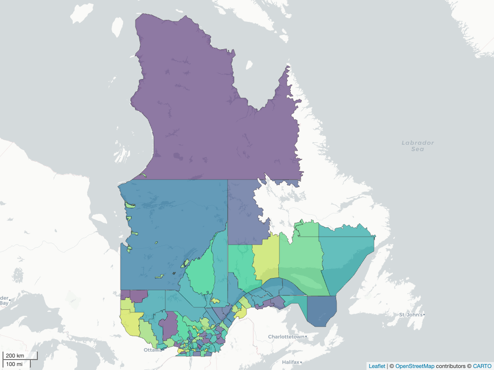
Maintenant, regardons les données cartographiques qui représentent le territoire selon la nature de la végétation.
Carte : domaines bioclimatiques
Les données de la Classification écologique du territoire québécois (DQC) vont nous donner un fond à mettre sur notre carte.
Je n’ai pas gardé le fichier complet puisque les données sont très lourdes. Le script scripts/partie_1/Preparation_eco_region.R prépare les données originales en un plus petit géopackage (classification_eco.gpkg) pour ce projet.
# Fonctionne si vous téléchargez les jeux de données originaux localement.
source(file = 'scripts/partie_1/Preparation_eco_region.R')Les données simplifiées sont mises en mémoire avec st_read().
cls_eco = st_read(
dsn = "data/partie_1/ecologie/CLASSI_ECO_QC/classification_eco.gpkg",
layer = 'N3_DOM_BIO',
quiet = TRUE
)Puis nous allons utiliser le système de coordonnées ou CRS (coordinate reference system) de la couche de domaines bioclimatiques comme référence pour toutes les couches de notre projet.
# Obtenir notre CRS chouchou et l'utiliser comme base pour faire la carte
projetCRS = st_crs(x = cls_eco)
# Ce CRS est en fait le code EPSG 32198 qui est un système de coordonnées
# projetées 'Conique conforme de Lambert du Québec' NAD83
projetCRS == st_crs(x = 32198)[1] TRUE# Tester si le CRS est équivalent entre des couches
st_crs(x = cls_eco) == st_crs(x = regqc)[1] FALSE# On transforme le CRS de la région du Québec
regqc_t = st_transform(x = regqc,
crs = projetCRS)Vous pouvez aussi exporter la représentation Well-known Text (WKT) du système CRS avec st_as_text() pour stocker l’information dans un fichier texte.
# Écrire le WKT maitre sur lequel on peut faire référence
writeLines(
# Extraire le WKT comme texte seulement
text = st_as_text(projetCRS),
# Fichier de sortie pour écrire le texte (aussi appeler 'Connection')
con = "data/param_0/projetCRS.txt"
)
# Lire le fichier CRS maitre
projetCRS_read = readLines(con = "data/param_0/projetCRS.txt")
# On peut directement utiliser ce CRS de la région du Québec
regqc_t = st_transform(x = regqc,
crs = projetCRS_read)Nous pouvons superposer les cartes de régions administratives avec la classification des domaines écologiques avec mapview(). Vous pouvez activer ou désactiver les couches en passant votre curseur sur l’icône des couches spatiales (sous les contrôles plus et moins pour zoomer dans la carte) et en appuyant sur le bouton à bascule (boite à cocher) des couches désirées.
# Régions admin du QC
mapview(
x = regqc_t,
zcol = 'MRS_NM_MRC',
layer.name = 'MRC du Québec',
# Change la palette de couleur (voir les palettes ici `sort(hcl.pals())`)
col.regions = hcl.colors(n = nrow(regqc_t),
palette = "Spectral"),
legend = FALSE
) +
# Classification Écologique
mapview(
x = cls_eco,
zcol = 'NOM_DB',
layer.name = 'Domaines biologiques'
)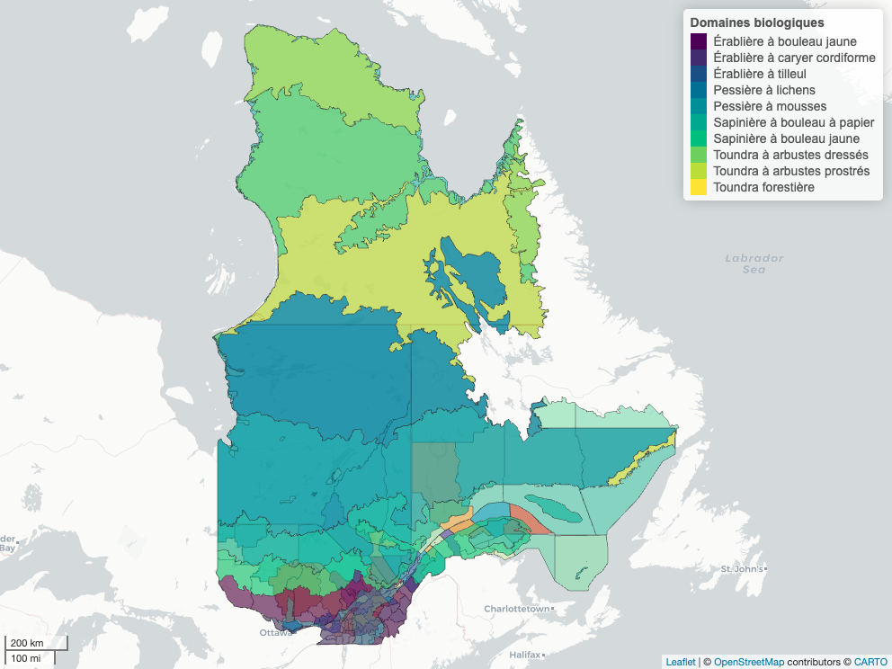
Cette carte n’est pas vraiment belle puisque les polygones sont superposés et empêche de bien voir les détails. Nous pourrions faire une carte qui superpose les bordures des régions administratives sur les domaines écologiques. C’est ce que nous allons faire avec une carte statique.
Cartes statiques
Le progiciel ggplot2 (Wickham 2016; Wickham et al. 2024) a plusieurs fonctions pour ajouter des couches spatiales (par exemple geom_sf). Aussi, ggplot() ajoute les couches une par-dessus les autres : donc l’ordre dans lequel les couches sont placées pour faire la carte est important.
Pour que les cartes s’affichent correctement, il faut mettre les couches spatiales dans le même système de référence spatial ou CRS (coordinate reference system). Nous allons aussi utiliser st_crs() pour extraire le CRS d’une couche spatiale. Nous pouvons vérifier que nos couches spatiales sont dans le même CRS si st_crs(cls_eco_simp) == st_crs(regqc) est TRUE (ce n’est pas le cas dans l’exemple qui suit).
# Vérification du CRS de couches spatiales (FALSE si différentes)
st_crs(x = cls_eco) == st_crs(x = regqc) [1] FALSE# Ici on avait déjà transformé la couche regqc_t.
st_crs(x = cls_eco) == st_crs(x = regqc_t) [1] TRUEComme nous l’avons vu, la fonction sf::st_transform() nous permet de reprojeter une de nos couches spatiales avec le CRS d’une autre. Avant d’exécuter cette fonction, nous allons aussi simplifier nos couches spatiales. Cela peut être utile si on a des couches spatiales très détaillées qui pourraient ralentir ggplot2. La fonction sf::st_simplify() simplifie nos données spatiales et donc accélère l’affichage des cartes. À noter que la simplification n’est pas nécessaire à faire pour toutes les cartes.
Voici comment simplifier les couches spatiales et rendre le CRS identique entre 2 couches :
# Pour la simplification des géométries
# (nombre qui donne un bon résultat suite à des tests)
tolerance = 1e3
# Simplifier une forme pour faire le graphique
cls_eco_simp = cls_eco |>
st_simplify(dTolerance = tolerance)
# Reprojection pour avoir le même CRS
regqc_simp = regqc |>
st_simplify(dTolerance = tolerance) |>
st_transform(crs = projetCRS)
# Ou en utilisation le CRS d'une couche directement
# au lieu de l'objet 'projetCRS'
regqc_simp = regqc |>
st_simplify(dTolerance = tolerance) |>
st_transform(crs = st_crs(x = cls_eco))Une fois les couches dans le même système de référence, nous pouvons dessiner notre carte avec ggplot() et geom_sf(). Je place chaque couche cartographique dans son objet ce qui facilitera la construction de la carte finale. Cela permet aussi de réutiliser des couches entre les graphiques.
# Faire le graphique de base ggplot
gg_base = ggplot()# Couche de domaines bioclimatiques
gg_cls_eco = geom_sf(
data = cls_eco, # Données
mapping = aes(fill = NOM_DB), # couleur selon les domaines biologiques
alpha = 0.9, # Transparence à 90%
linewidth = 0 # Pas de ligne, plus beau!
)
# Couche des régions administratives du Québec
gg_reg_qc = geom_sf(
data = regqc_simp, # Données
fill = NA, # Pas de remplissage des polygones
colour = 'grey100', # Couleur des lignes
linewidth = 0.05 # largeur fine pour les lignes
)Puis on assemble les couches pour faire la carte.
# Ajout des couches ggplot dans l'ordre voulu
gg_qc_db = gg_base +
# Ajout de la classification écologique
gg_cls_eco +
# Ajout des régions admin, par-dessus pour voir les bordures
gg_reg_qcNotez que la couche gg_cls_eco est dessinée en premier et gg_reg_qc après. Cela permet de voir les délimitations des régions administratives par-dessus les domaines bioclimatiques. Le graphique est dans l’objet gg_qc_db. Notez qu’on ajoute une palette de couleur et change le thème de base pour notre carte.
# Afficher la carte
gg_qc_db +
# Change le remplissage pour la palette viridis
scale_fill_viridis_d(
# Ajout d'un titre à la légende
guide = guide_legend(title = 'Domaine biologique')
) +
# Thème minimal
theme_void()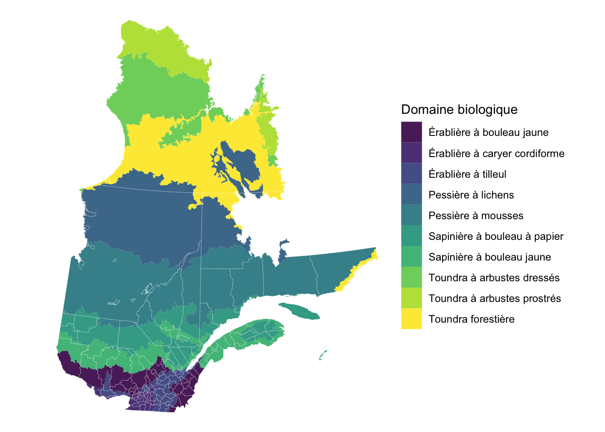
Super! Un fond de carte pas pire pour l’ensemble du Québec! Par contre, il manque quelque chose pour s’y retrouver : l’eau et des villes.
Carte : hydrologie et villes
Notre carte de base manque de contexte. Plusieurs endroits au Québec sont facilement reconnaissables par leur structure hydrologique, ce qui permettrait de mieux se situer sur la carte.
La Géobase du réseau hydrographique du Québec (GRHQ) est un large ensemble de données de référence de l’hydrographie disponibles sur le site de Données Québec (DQC). Nous allons seulement télécharger manuellement les données pour le sud du Québec (incluant les zones 00, 01, 02, 03, 04, 05, 06, 07_1, 07_2, 08, 14 de l’index de téléchargement (DQC)). Un script (scripts/partie_1/Preparation_hydrologique.R) permet de préparer les données en géopackage (data/partie_1/hydro/grhq_sud_qc.gpkg) pour ce projet. Lors de la préparation pour réduire la taille du fichier, j’ai appliqué un filtre pour garder les polygones de \(1e6 m^2\) d’aire et plus, ce qui permet d’afficher l’essentiel des polygones pour notre carte et de réduire considérablement la taille du fichier.
# Fonctionne si vous téléchargez les jeux de données originaux localement.
source(file = 'scripts/partie_1/Preparation_hydrologique.R')Les données préparées sont chargées et transformées avec le même CRS du projet.
# Lire les données retravaillées du GRHQ
hq_filt_complete = st_read(
dsn = 'data/partie_1/hydro/grhq_sud_qc.gpkg',
quiet = TRUE
) |>
st_transform(crs = projetCRS)Aussi, nous pourrions inclure le nom de villes avec une grande population sur la carte, ce qui serait super pour visualiser les données. Le site de portraits climatiques d’Ouranos a un fichier qui nous facilitera la tâche. Nous pouvons télécharger les données directement avec le lien. Nous allons ensuite extraire certaines villes pour afficher sur la carte.
Le script scripts/partie_1/Preparation_villes.R prépare un fichier géopackage (data/partie_1/villes/villes_qc_ouranos.gpkg) que nous pouvons charger directement. Le script importe un fichier GeoJSON disponible sur le site d’Ouranos directement à partir d’un lien html (voir l’objet lien_villes dans le script de préparation). La création d’un géopackage pour ce projet permet de stocker ces données et d’y faire référence même si le serveur Ouranos change ou devient inaccessible.
# Fonctionne si vous téléchargez les jeux de données originaux localement.
source(file = 'scripts/partie_1/Preparation_villes.R')Nous pouvons charger notre géopackage et sélectionner des villes qui nous intéresse pour mettre sur notre carte.
# Lecture du fichier des villes et populations du site d'Ouranos
villes_qc = st_read(
dsn = 'data/partie_1/villes/villes_qc_ouranos.gpkg',
quiet = TRUE)
# Afficher le nom des villes au besoin
# sort(villes_qc$name)
# Vecteur avec le nom des villes
villes_selection = c('Montréal', 'Québec',
'Gatineau', 'Sherbrooke',
'Saguenay', 'Trois-Rivière',
"Rouyn-Noranda",
'Gaspé', 'Témiscaming',
'Sept-Îles', 'Rimouski')
# Extraction du nom de villes à ajouter sur la carte
villes_qc_lst_flt = villes_qc |>
filter(name %in% villes_selection)J’ai remarqué qu’une partie du réseau hydrique de la GRHQ déborde en Ontario. Il faut donc extraire ou filtrer les données qui se retrouvent seulement au Québec. Le site Statistique Canada permet de télécharger les limites du recensement du Canada (voir Recensement de 2021 - Fichiers des limites). Le script scripts/partie_1/Preparation_admin_region.R prépare les données dans un géopackage avec nom can_lim.gpkg.
# Lire le fichier
can_bord = st_read(
dsn = "data/partie_1/admin_geo/admin_reg_can/can_lim.gpkg",
quiet = TRUE
)
# Extraire les limites du Québec et de l'Ontario
qcont_bord = can_bord |>
# PRFNOM: Nom de la province ou du territoire, en français.
filter(PRFNOM %in% c("Québec", "Ontario")) |>
# Changer le CRS
st_transform(crs = projetCRS) Étant donné qu’une partie du réseau hydrique est en Ontario, on fait une intersection pour « couper » les géométries selon la province (st_intersection()), puis on filtre pour ne garder que le nom de la province de notre choix (filter()).
# Extraction de l'hydrologie du Québec seulement
hq_filt_qc = hq_filt_complete |>
# Intersection avec le fichier de l'Ontario et du Québec
st_intersection(qcont_bord) |>
# Garder seulement ce qui se retrouve au Québec
filter(PRFNOM == "Québec")Avec cette couche filtrée, nous allons créer un objet geom_sf() qu’on ajoutera à la carte.
# Couche ggplot de l'hydrologie du Québec
gg_hq = geom_sf(
data = hq_filt_qc,
linewidth = 0,
fill = 'lightblue', # Couleur de l'eau
colour = 'lightblue'
)
# Ajout le point des villes
gg_villes = geom_sf(
data = villes_qc_lst_flt
)Pour ne pas que les étiquettes des villes se chevauchent, nous allons utiliser une fonction (geom_text_repel) qui utilise des nombres aléatoires. Pour une reproductibilité de la carte, un point de départ est choisi pour obtenir des nombres aléatoires avec set.seed(). Ce point de départ (seed, germe ou graine aléatoire) est un nombre entier comme 12345 ou 247966138.
# Établir le germe aléatoire
set.seed(seed = 12345)Maintenant, nous avons les informations nécessaires pour faire une carte avec :
- les domaines biologiques (
gg_cls_eco), - le réseau hydrique d’importance au Québec (
gg_hq), - les régions administratives (
gg_reg_qc), - les points et noms de villes sélectionnées (
gg_villeset les étiquettes avecgeom_text_repel()).
Notez encore une fois l’ordre des couches.
# Faire le graphique de la carte
gg_qc_db = gg_base +
# Ajout de la classification écologique
gg_cls_eco +
# Ajouter la GRHQ rognée
gg_hq +
# Ajout des régions admin, par-dessus pour voir les bordures
gg_reg_qc +
# Ajouter le nom des villes
gg_villes +
# Ajouter les étiquettes du nom des villes
ggrepel::geom_text_repel(
data = villes_qc_lst_flt,
# Définir les étiquettes et les coordonnées spatiales
mapping = aes(label = name,
geometry = geometry),
# Extraction des coordonnées spatiales pour dessiner les étiquettes
stat = "sf_coordinates",
# Taille des étiquettes
size = 3,
# Ajout de tampon blanc pour les noms de villes
bg.color = "white",
# Étendue du tampon
bg.r = 0.15
)La carte s’affiche avec l’objet gg_qc_db. Nous pouvons ensuite modifier les couleurs de la carte avec scale_fill_viridis_d() et sa thématique avec theme_void() pour partir d’une carte sans thème puis modifier l’espacement des items de la légende avec theme() et l’argument legend.key.spacing.y. La légende (voir guide_legend() dans scale_fill_viridis_d()) peut aussi être placée en bas (position = 'bottom') pour laisser plus de place à notre carte.
# Carte avec thématique
gg_qc_db +
# Change le remplissage pour la palette viridis
scale_fill_viridis_d(
guide = guide_legend(
title = 'Domaine biologique',
title.position = "top",
# Légende en bas
position = 'bottom',
# Nombre de rangées pour les étiquettes de la légende
nrow = 4,
# Orientation horizontale
direction = 'horizontal'
)
) +
# Thème au minium
theme_void() +
# Changer l'espacement entre les étiquettes de la légende
theme(legend.key.spacing.y = unit(x = 0.015, units = "cm"))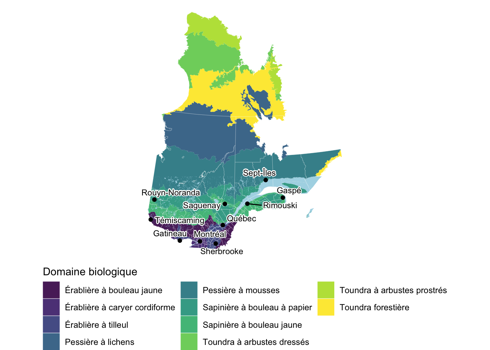
Couper pour le Québec méridional
Le Québec est tellement beau et grand! Et justement, il est tellement grand qu’il serait judicieux de se concentrer sur la partie Sud, soit la plus peuplée.
Pour ces couches spatiales, nous allons donc extraire la partie sud (méridionale) du Québec. Celle-ci correspond a 50.5 degrés de latitude (axe Y), selon l’Atlas des oiseaux nicheurs du Quebec (2019).
Le CRS des domaines biologiques st_crs(cls_eco) est en epsg:32198 ou NAD83 / Quebec Lambert. Il faut convertir 50.5 degrés en epsg:32198. Mais comment? Il y a des convertisseurs en ligne, mais nous pouvons le programmer!
Prenons les limites géographiques du Québec, ce qu’on appelle la boite limite ou bounding box (‘bbox’) peut s’extrait avec st_bbox(). Notre stratégie sera d’aller chercher la boite limite en coordonnées du World Geodetic System 1984 (WGS84) ou epsg:4326 qui sont en degrés.
# Trouver les limites du Québec en WSG84
bbox_qc_wsg84 = cls_eco_simp |>
st_transform(crs = 4326) |> # Ici on transforme de 32198 vers 4326
st_bbox()Comparez les limites en epsg:4326 vs epsg:32198.
# Boite limite 'bounding box' en epsg:4326 (mètres)
bbox_qc_wsg84 xmin ymin xmax ymax
-79.76288 44.99136 -57.10750 62.58169 # Extraire la boite limite 'bounding box' en epsg:32198 (mètres)
(bbox_qc = st_bbox(obj = cls_eco_simp)) xmin ymin xmax ymax
-830291.4 117964.2 783722.4 2090978.4 Ensuite nous trouvons le centre entre la limite de latitude minimum et maximum, puis nous faisons un point au centre et au nord de la limite que nous souhaitons mettre.
# Trouver le centre entre xmin et xmax (ou l'étendue longitude du Québec en WSG84)
centre = mean(bbox_qc_wsg84[c('xmin','xmax')])
round(centre, 1) # environ -68.5[1] -68.4Puis, un point fictif est créé avec st_point() avec notre centre (longitude = -68.4, près du méridien central EPSG:32198) et la limite nord (latitude = 50.5). Ce point est transformé en epsg:32198
# Faire un point fictif au Québec
pts = st_point(x = c(centre, 50.5)) |>
# Mettre le CRS
st_sfc(crs = 4326) |>
# Transformer en epsg:32198
st_transform(crs = projetCRS) |>
# Extraire les coordonnées seulement
st_coordinates()La valeur Y de ce point fictif (créé en epsg:4326 vers epsg:32198) remplacera le ymax de l’objet bbox_qc. Cette nouvelle boite limite servira à rogner (st_crop()) la carte pour enlever tout ce qui se retrouve au-dessus du 50.5 latitude (ou pts[2] = 721304.84 mètres selon le projetCRS).
# Remplacer la valeur de la borne supérieure
bbox_qc[4] <- pts[2]Nous sommes prêts à faire notre carte pour le Québec méridional. Je rogne les couches cls_eco et regqc (sans simplification) pour avoir les données les plus propres possible pour la carte finale.
# Péparation des domaines bioclimatiques pour le Québec méridional
cls_eco_meridional = cls_eco |>
st_transform(crs = projetCRS) |>
# boite gabarit pour rogner
st_crop(y = bbox_qc) |>
mutate(
# Calcul de l'aire de chaque polygone des domaines bioclimatiques
aire_cls_eco = st_area(geom),
# Proportion d'aire pour chaque polygone
# Note : une polygone (NOM_DB == 'Toundra forestière') est
# très petit et peut être enlevé sans affecter la visualisation
prop = round(aire_cls_eco/sum(aire_cls_eco), 4)*100
) |>
# Enlever NOM_DB == 'Toundra forestière'
filter(NOM_DB != "Toundra forestière")
# Péparation/Rogner des régions administratives pour le Québec méridional
regqc_meridional = regqc |>
st_transform(crs = projetCRS) |>
# boite gabarit pour rogner
st_crop(y = bbox_qc)Puis on refait les couches pour mettre dans le graphique ggplot2.
# Domaines biologiques rognés
gg_cls_eco_merid = geom_sf(
data = cls_eco_meridional,
mapping = aes(fill = NOM_DB), # couleur en fonction des domaines biologiques
alpha = .9, # Transparence à 90%
linewidth = 0 # Pas de ligne, plus beau
)
# Régions agministratives rognées
gg_regqc_merid = geom_sf(
data = regqc_meridional,
fill = NA, # Pas de remplissage
colour = 'grey100', # Couleur des lignes
linewidth = 0.05 # Fine ligne
)Finalement, on met tout ensemble pour obtenir notre carte du Québec méridional.
# Établir le germe aléatoire
set.seed(12345)
# Faire le graphique
gg_qc_db = gg_base +
# Domaines biologiques rognés
gg_cls_eco_merid +
# Ajouter la GRHQ rognée
gg_hq +
# Ajout des régions admin, par-dessus pour voir les bordures
# Régions agministratives rognées
gg_regqc_merid +
# Ajouter le nom des villes
gg_villes +
# Ajouter le texte du nom des villes
ggrepel::geom_text_repel(
data = villes_qc_lst_flt,
mapping = aes(label = name,
geometry = geometry),
stat = "sf_coordinates",
size = 3,
# Ajout de fond blanc pour les noms de villes
bg.color = "white",
bg.r = 0.15
) +
# Change le remplissage pour la palette viridis
scale_fill_viridis_d(
guide = guide_legend(
title = 'Domaine biologique',
title.position = "top",
# Légende en bas
position = 'bottom',
# Nombre de rangées pour les étiquettes de la légende
nrow = 2,
# Orientation horizontale
direction = 'horizontal'
)
) +
# Thème au minium
theme_void() +
# Changement d'autres paramètres du thème
theme(
# Changer l'espacement entre les étiquettes de la légende
legend.key.spacing.y = unit(x = 0.015, units = "cm"),
# Taille du texte
legend.text = element_text(size = 7),
# Taille du titre
legend.title = element_text(size = 8)
)Puis on admire notre résultat :
# Afficher la carte
gg_qc_db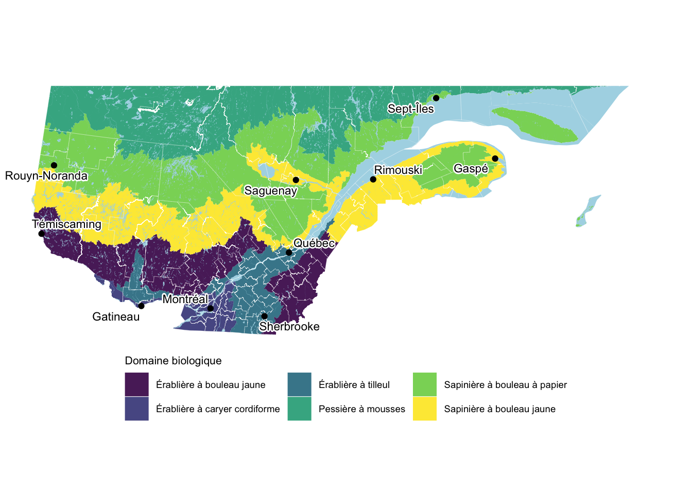
Enfin! Une carte qui a de la gueule. Maintenant, exportons la carte avec ggsave().
# Exportation en PNG
ggsave(
# Changer l'extension '.png' pour '.pdf' ou '.svg' au besoin.
filename = "output/partie_1/carte_domEco_Qc.png",
plot = gg_qc_db,
width = 6,
height = 6,
dpi = 300
)1.2 Zones critiques de biodiversité
Carte : sites d’observations eBird
Notre carte de fond est pas mal, mais elle ne dit pas grand-chose côté biodiversité. Un des objectifs du dépliant est de présenter les zones critiques de biodiversité. Mais où seraient situées ces zones? Lorsque les ornithologues amateurs font des observations sur la plateforme eBird, ils enregistrent leurs observations dans des points de sites publics (eBird Cornell Lab of Ornithology 2025). Ainsi, les observations enregistrées à ces sites pourraient servir de proxy d’endroits intéressants pour la biodiversité : s’il y a beaucoup d’espèces d’oiseaux, c’est qu’il doit y avoir beaucoup de nourriture pour soutenir cette diversité d’organismes et ainsi, augmenter nos chances de voir d’autres choses intéressantes.
Il est possible d’aller cherche ces points de sites publics eBird directement avec l’API de eBird. Le fichier data/partie_1/biodiv/eBird_hotspots_CA_QC*.csv a été obtenu en suivant les explications sous la section ‘Is there a list of all eBird Hotspots?’ au lien eBird Hotspot FAQs. Cela requiert une clé API de eBird (voir VOTRECLEAPI dans la commande plus bas). Le fichier eBird regions and region codes_18Apr2023.xlsx (téléchargeable ici ) contient les codes régionaux (comme CA-QC) et permet de choisir la bonne zone à télécharger directement. La commande ‘terminal’ (en utilisant le langage bash et non dans la console R) suivante permet (avec quelques modifications expliquées dans les liens ci-haut) d’obtenir le fichier eBird_hotspots_CA_QC*.csv à jour.
# Prendre la date actuelle
DATE_VAR=$(date -I)
# Téléchargement du fichier des sites publics eBird avec la date de téléchargement
curl --header 'X-eBirdApiToken: VOTRECLEAPI' \
--location -g 'https://api.ebird.org/v2/ref/hotspot/CA-QC?fmt=csv' > \
eBird_hotspots_CA_QC_${DATE_VAR}.csvPuis, ce ficher .csv est importé et le nom des colonnes ajouté.
# Mettre les données des points chauds de eBird en mémoire
pts_chauds_ebird = "data/partie_1/biodiv/eBird_hotspots_CA_QC_2025-10-13.csv"
# Mettre le fichier en mémoire
ebird_hp = read.csv(file = pts_chauds_ebird,
header = FALSE)
# Ajouter un nom aux colonnes
names(ebird_hp) <- c("locId",
"countryCode",
"subnational1Code",
"subnational2Code",
"lat", "lng", # Données spatiales!
"locName", # Nom des sites
"latestObsDt", # Date de la dernière observation
"numSpeciesAllTime") # Nombre d'espèces Ce fichier CSV contient de l’information spatiale (lng, lat). Les fonctions st_as_sf et st_set_crs, définissent les données spatiales (POINT) du CSV importé.
# Préparer les données spatiales pour une cartographie
ebird_hp_prep = ebird_hp |>
# Mettre tableau en format spatial
st_as_sf(coords = c('lng', 'lat')) |>
# Choisir le CRS
st_set_crs(value = 4326) |>
# Formatter la colonne de date
mutate(
date_obs_recent = as.POSIXct(
latestObsDt,
format="%Y-%m-%d %H:%M",
tz = Sys.timezone()
)
) |>
# Projection du jeu de données selon le CRS du projet
st_transform(crs = projetCRS) Pour la cartographie interactive, nous pourrions créer une étiquette en combinant le nom des sites de points eBird et le nombre d’espèces dans une nouvelle colonne nommée labs.
ebird_hp_sf = ebird_hp_prep |>
# Nouvelle colonne d'étiquette
dplyr::mutate(
labs = sprintf(
# Joindre le nom d'un point eBird et le nombre d'espèces.
fmt = "%s — %s sp.",
locName,
numSpeciesAllTime)
)Une petite exploration des données montre qu’en filtrant les sites ayant beaucoup d’espèces (150 et +) et dont la dernière visite est après 2020, on obtient :
ebird_hp_sf |>
# Application du filtrer
filter(numSpeciesAllTime >= 150, # Nombre d'espèces
date_obs_recent >= '2020-01-01') |> # Date
nrow()[1] 677Le chiffre de 150 espèces pourrait aussi être choisi en fonction d’un certain quantile. Avec une probabilité de 0.85, on obtient : 146.
On peut voir que des sites n’ont pas été visités depuis longtemps avec la carte ci-dessous (notez que si vous téléchargez les données eBird longtemps dans le futur, les conclusions seront différentes)! Cela pourrait être intéressant d’aller visiter ces sites et d’ajouter des observations 🦅.
# 20 sites avec vieilles dates de visites (pas de liste eBird depuis ce temps!)
sites_perdus = ebird_hp_sf |>
# Étiquette avec l'année d'observation
dplyr::mutate(yr_last = substr(latestObsDt, 0,4),
labs = sprintf(fmt = "%s — %s", yr_last, labs),
labs_yr_sp = sprintf(fmt = "%s — %s", yr_last, numSpeciesAllTime)
) |>
# Montre les 20 premiers avec les dates les plus petites
slice_min(order_by = date_obs_recent,
n = 20)Vous pouvez afficher la carte avec ce code :
# Faire une carte
mapview(x = sites_perdus,
zcol = "yr_last",
layer.name = 'Nb Esp.',
label = "labs")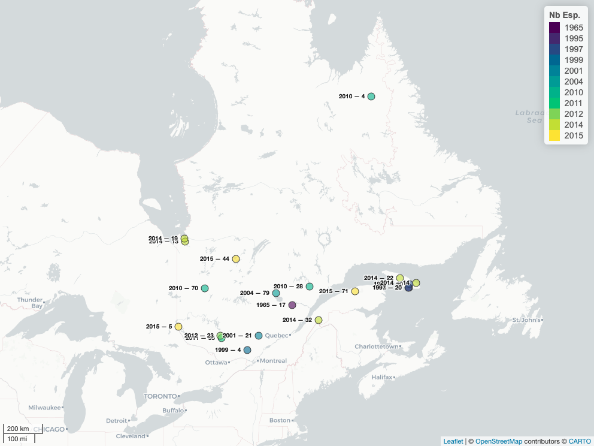
Le code plus bas montre la carte avec tous les points. Cela fait beaucoup de points!
# Préparation des données simplifier (moins de colonnes)
ebird_hp_sf_simple = ebird_hp_sf |>
# Sélection de colonnes pour l'affichage de détail dans la carte
dplyr::select(locId, latestObsDt, numSpeciesAllTime, labs) Je vous laisse explorer avec ce code :
# Regarder les points chauds d'observations eBird
mapview(
x = ebird_hp_sf_simple,
# Ajout de la couleur en fonction du nombre d'espèces vues
zcol = 'numSpeciesAllTime',
label = "labs",
layer.name = 'Nb Esp.')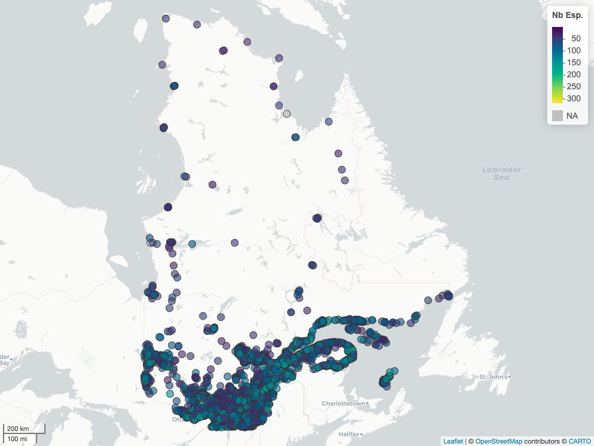
On peut aussi répondre à des questions de coin de table : où sont les sites avec plus de 250 espèces différentes? Promenez le curseur sur les points pour voir plus de détails sur les sites.
ebird_hp_chaud = ebird_hp_sf |>
dplyr::filter(numSpeciesAllTime >= 250) |>
# Sélection de colonnes pour l'affichage de détail dans la carte
dplyr::select(locId, latestObsDt, numSpeciesAllTime, labs)# Faire la carte
mapview(
x = ebird_hp_chaud,
zcol = "numSpeciesAllTime",
label = "labs",
labelOptions = leaflet::labelOptions(noHide = FALSE,
opacity = .85,
textOnly = FALSE),
layer.name = 'Nb Esp.<br> filtre(>=250)')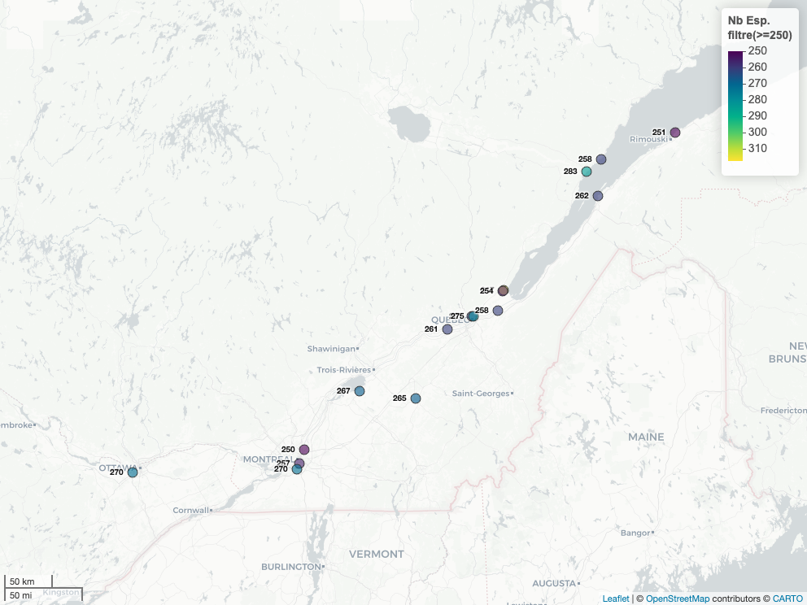
Avec ce dernier filtre, les points se situent près de parcs abondamment fréquentés par les citoyens, et près des habitations. Aussi, la totalité des points se retrouve près de cours d’eau, marais, réservoirs ou un milieu humide. Ce qui démontre une fois de plus l’importance des milieux humides pour la biodiversité.
Regardons maintenant où sont les sites avec plus de 150 observations, peu importe la dernière date de visite.
ebird_hp_sf_chaud_bio = ebird_hp_sf |>
# Sélection de colonnes pour l'affichage de détail dans la carte
dplyr::select(locId, latestObsDt, numSpeciesAllTime, labs) |>
# Regarder seulement les sites qui ont plus de 150 espèces
filter(numSpeciesAllTime >= 150)mapview(
x = ebird_hp_sf_chaud_bio,
zcol = 'numSpeciesAllTime',
label = "labs",
layer.name = 'Nb Esp.<br> filtre(>=150)')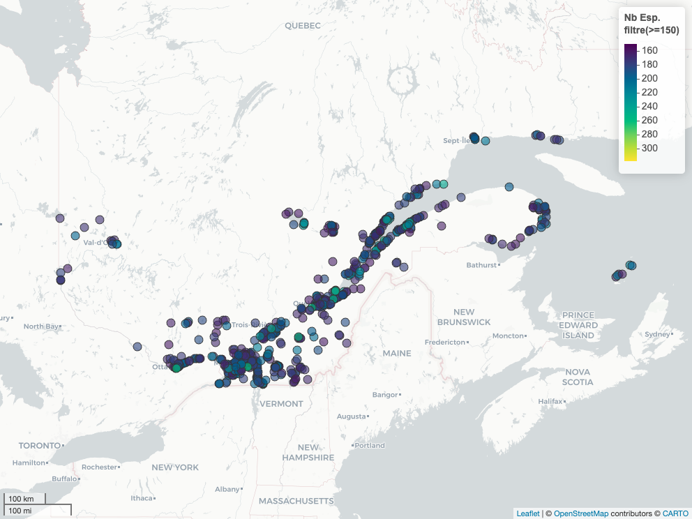
Les sites avec le plus d’espèces sont plus au sud. Deux explications rapides :
- il y a plus de personnes qui notent des observations au sud du Québec à différents moments dans l’année, ce qui augmente l’effort d’échantillonnage (et donc la probabilité de trouver des espèces plus rares).
- la diversité des oiseaux change en fonction de la latitude. Donc, plus les points se retrouvent dans le nord, moins d’espèces devraient se retrouver. Nous pourrions regarder cela avec un modèle linéaire. Restons sur les objectifs de notre projet.
Pour avancer à la prochaine étape, il pourrait être intéressant de garder les sites avec le plus d’observations pour une MRC (disons environ une vingtaine).
Zones critiques de biodiversité eBird pour une seule région
Nous avons un problème : aucun point eBird n’est associé avec les MRC des régions administratives. Par contre, il est possible de faire une jointure spatiale en utilisant les sites eBirds et les régions du Québec avec la fonction st_join().
# Joindre les informations de MRC pour chaque point d'observation eBird
eb_qc = ebird_hp_sf |>
st_join(y = regqc_t)Nous pouvons exporter ces données pour les mettre dans un logiciel GIS (comme QGIS), ou les intégrer à une base de données ce qui permettrait d’afficher chaque MRC. Ces données pourraient servir dans une application Shiny.
# Exportation des données en géopackage
st_write(
obj = eb_qc,
dsn = "output/partie_1/site_pub_ebird_MRC.gpkg",
delete_dsn = TRUE,
quiet = TRUE
)Voici une image montrant les sites eBird avec les MRC dans QGIS en utilisant quelques règles de format d’étiquettes pour afficher les sites :
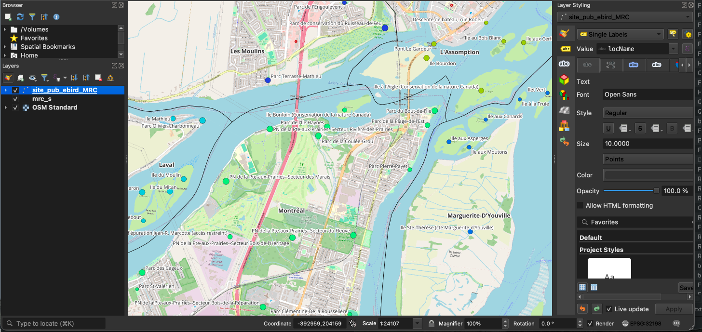
Pour ce projet, nous allons extraire seulement les 20 sites ayant le plus d’espèces d’oiseaux.
# Donne le top n des sites en fonction du nombre d'espèces vues
eb_qc_topn = eb_qc |>
# Groupe par MRC pour faire le sommaire (filtration)
group_by(MRS_NM_MRC) |>
# Extraire 20 points avec le plus d'espèces d'oiseaux par MRC
slice_max(n = 20,
order_by = numSpeciesAllTime)Puis afficher le résultat pour tout le Québec sur notre carte interactive.
mapview(regqc_t,
legend = FALSE,
zcol = 'MRS_NM_MRC') +
mapview(eb_qc_topn,
legend = FALSE,
cex = 'numSpeciesAllTime',
zcol = 'MRS_NM_MRC',
label = 'locName') 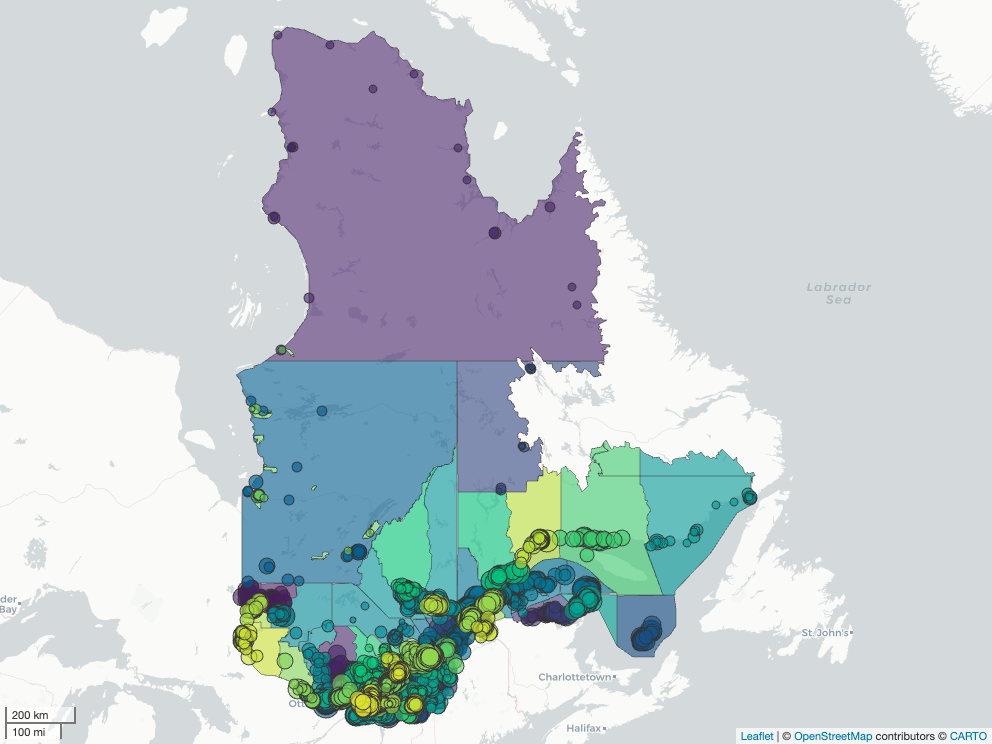
Ajout des sites eBird sur la carte de base
À titre d’exemple, nous allons afficher seulement les sites eBirds qui se retrouvent dans l’emprise de Montréal et Laval. En utilisant les données de régions administratives, on peut filtrer et faire une boite limite avec seulement les régions voulues.
# Extraire l'emprise spatiale autour de Montréal et Laval
emprise_region_villes = regqc_t |>
filter(MRS_NM_MRC %in% c("Montréal", 'Laval')) |>
st_bbox()Il faut ensuite rogner les cartes avec :
# Rogner l'information hydrologique pour cette région
hq_lvl_mtl = hq_filt_qc |> st_crop(y = emprise_region_villes)
reg_mtl = regqc_t |> st_crop(y = emprise_region_villes)
# Prendre les 20 points les plus élevés en nombre d'espèces pour Montréal et Laval
eb_qc_topn_lvl_mtl = eb_qc_topn |>
filter(MRS_NM_MRC %in% c("Montréal", 'Laval')) À noter que si on regarde de très près la région de Montréal et Laval, la classification des domaines écologiques est assez uniforme. Donc pas besoin de l’ajouter à notre carte.
Bonus : Pour se rendre à ces sites, on pourrait y aller en vélo? J’utiliserai donc les fichiers spatiaux du réseau cyclable de Montréal (DQC) (Ville de Montréal 2013) et les pistes cyclables et piétonnières de Laval (DQC) (Ville de Laval 2017). Cela démontre aussi que même les GeoJSON peuvent être importés avec sf.
# Chemin d'accès aux fichiers de réseaux cyclables
res_cycl = "data/partie_1/infrastructure/res_cyclable"
lien_res_cycl_mtl = file.path(res_cycl, 'reseau_cyclable.geojson')
lien_res_cycl_lvl = file.path(res_cycl, 'pistes-cyclables-et-pietonnieres.geojson')
res_cyclable_mtl = st_read(dsn = lien_res_cycl_mtl, quiet = TRUE)
res_cyclable_lvl = st_read(dsn = lien_res_cycl_lvl, quiet = TRUE)Il ne reste plus qu’à faire notre carte!
Je commence par définir une carte de base sans le nom des sites.
gg_carte_points_inret_ebird_base = ggplot() +
# Polygones des MRCs
geom_sf(data = reg_mtl) +
# Polygones d'eau
geom_sf(data = hq_lvl_mtl, fill = 'lightblue') +
# Lignes du Réseau cyclable
geom_sf(data = res_cyclable_mtl, colour = "#A1D998", alpha = .5) +
geom_sf(data = res_cyclable_lvl, colour = "#A1D998", alpha = .5) +
# Top Points eBirds
geom_sf(data = eb_qc_topn_lvl_mtl,
aes(size = numSpeciesAllTime,
shape = MRS_NM_MRC,
colour = numSpeciesAllTime)) +
# Couleur des points
scale_colour_viridis_c() +
# Thème minimal
theme_void() +
# Ajout de titre aux légendes
labs(colour = "Nb espèces",
size = "Nb espèces",
shape = "MRC")On ajoute le nom des sites sur la carte de base.
# Établir le germe aléatoire
set.seed(123456)
gg_carte_points_inret_ebird = gg_carte_points_inret_ebird_base +
# Texte nom des sites
ggrepel::geom_text_repel(
data = eb_qc_topn_lvl_mtl,
mapping = aes(label = labs,
geometry = geometry),
stat = "sf_coordinates",
size = 2.25,
# Ajout de fond blanc pour les noms de villes
bg.color = "white",
bg.r = 0.15) Puis, on l’affiche.
gg_carte_points_inret_ebird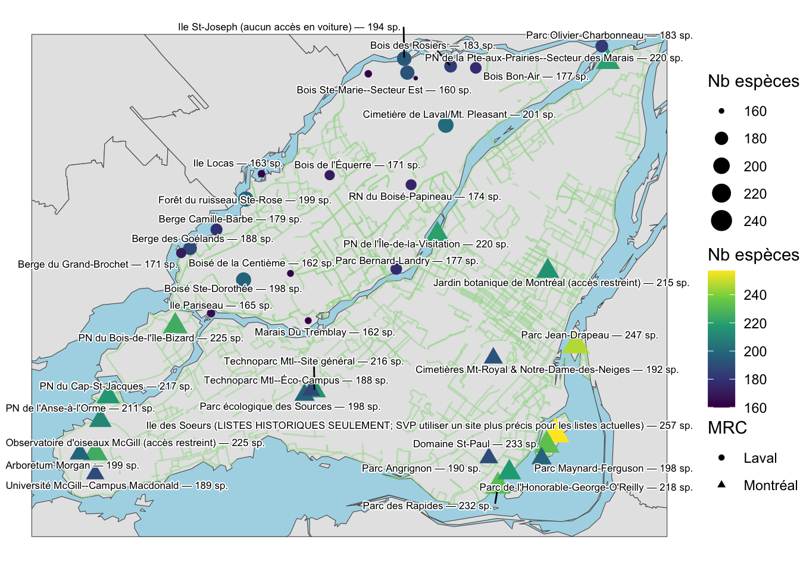
La carte est un peu chargée avec tous les longs noms des sites. Je propose donc de faire un petit ménage dans les noms longs en enlevant les parties qui sont inutiles de représenter. La fonction gsub() permet de faire une sorte de ‘recherche et remplacer’ comme dans un éditeur de texte. Je détermine en premier des patrons à retirer (voir l’objet patt_v) puis les combines ensemble avec le caractère | pour trouver tout en même temps (voir l’objet patt).
Aussi, je veux un ID unique pour chaque site. Dans le jeu de données, chaque site a un numéro de rangée (row_number()). J’utilise ce numéro comme identifiant.
Finalement, je vais faire une nouvelle étiquette en utilisant sprintf() avec les numéros de lignes et notre nouvelle colonne d’étiquettes corrigées.
# Texte à rechercher et remplacer
# pour limiter la taille des étiquettes à afficher
patt_v = c(
", Laval",
" \\(accès restreint\\)",
" \\(aucun accès en voiture\\)",
" \\(LISTES HISTORIQUES SEULEMENT; SVP utiliser un site plus précis pour les listes actuelles\\)")
# Faire un patron de recherche pour tout enlever d'un seul coup
patt = paste0(
patt_v,
collapse = "|"
)
# À partir de notre jeu de données
eb_qc_topn_lvl_mtl_id = eb_qc_topn_lvl_mtl |>
# Enlève les groupes présents
ungroup() |>
# Ajout des colonnes
mutate(
# Chaque site avec nom corrigé
site_corr = gsub( # gsub permet de chercher et remplacer
pattern = patt, # Patron de recherche
replacement = '', # Remplacer par rien
x = locName # De la colonne des noms de sites
),
# Ajoute un numéro unique (ici le numéro de ligne est suffisant)
rnb = as.factor(row_number()), # Mettre en facteur met en ordre les chiffres
# Création de nouvelles étiquettes
site_labs = sprintf(
fmt = "%s: %s",
rnb, site_corr
))Notre jeu de données est maintenant prêt à faire la carte.
# Noter le nombre de lignes dans le jeu de données
nrep = nrow(eb_qc_topn_lvl_mtl_id)
# En reprenant la carte de base, on ajoute les étiquettes et une légende
gg_carte_points_inret_ebird = gg_carte_points_inret_ebird_base + # Carte de base
# Texte nom de villes
ggrepel::geom_label_repel(
# Nouveau jeu de données
data = eb_qc_topn_lvl_mtl_id,
# Ajouter les étiquettes
mapping = aes(
label = rnb, # Étiquette sur la carte : seulement des chiffres
geometry = geometry, # Où vont les étiquettes
fill = factor(site_labs) # La légende sera les étiquettes complètes
),
stat = "sf_coordinates",
size = 2.25 # Taille des étiquettes sur la carte
) +
# Légende pour le nom des sites
scale_fill_manual(
name = 'Site Name', # Nom de la légende
values = rep( # Couleur des étiquettes
scales::alpha("white",
alpha = .5),
nrep),
labels = eb_qc_topn_lvl_mtl_id$site_labs # Nom des étiquettes en ordre
) +
# Changement de l'apparence de la légende pour les étiquettes des sites
guides(
# Redéfinir comment la légende de remplissage affiche
fill = guide_legend(
# Mettre la légende de remplissage en bas
position = "bottom",
# Changer des paramètres de thématique seulement pour la partie de remplissage
theme = theme(
# Change la taille du texte des étiquettes dans la légende
legend.text = element_text(size = 8),
# Change la distance horizontale entre les étiquettes de la légende
legend.key.width = unit(0.05, "cm"),
# Change la distance verticale entre les étiquettes de la légende
legend.key.height = unit(0.05, "cm"),
# Position du titre
legend.title.position = "top",
# Justification à gauche ==0 (droite ==1, centre == 0.5)
legend.title = element_text(hjust = 0),
# Ajouter une marge pour éviter de couper le texte
legend.margin = margin(
t = 0,
r = 0.5,
b = 1,
l = 2,
unit = 'cm')
),
# Changer la taille des étiquettes
override.aes = list(
size = 0, # Change la taille des 'Clés' de la légende
colour = scales::alpha('black', alpha = 0) # Change la couleur des 'Clés'
)
)
)On affiche le produit.
gg_carte_points_inret_ebird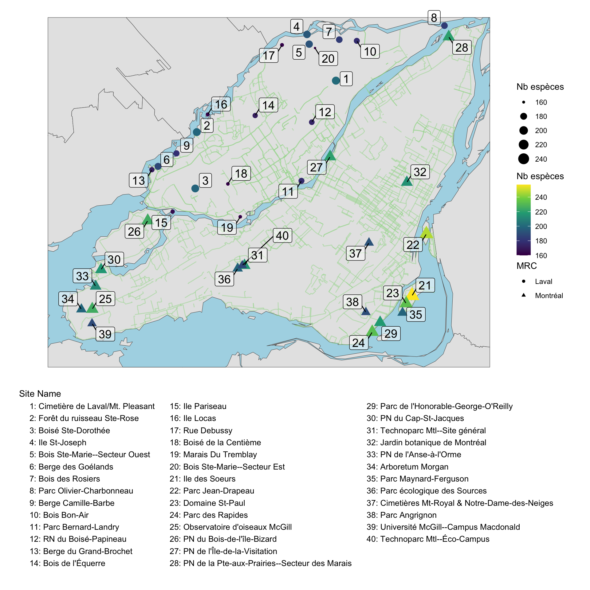
Puis on exporte l’image.
# Exportation en PNG
ggsave(
# Changer l'extension '.png' pour '.pdf' ou '.svg' au besoin.
filename = "output/partie_1/carte_pt_ebird_Qc.png",
plot = gg_carte_points_inret_ebird,
width = 10,
height = 10,
dpi = 300
)Et pour finir une carte interactive!
# On ajoute une étiquette avec le nombre d'espèces
zhpb = eb_qc_topn_lvl_mtl_id |>
mutate(
labs2 = sprintf('%s; sp : %s',
site_corr,
numSpeciesAllTime)
)# carte interactive pour le plaisir
mapview(
zhpb,
zcol = 'numSpeciesAllTime',
layer.name = "NB espèces",
label = "labs2"
)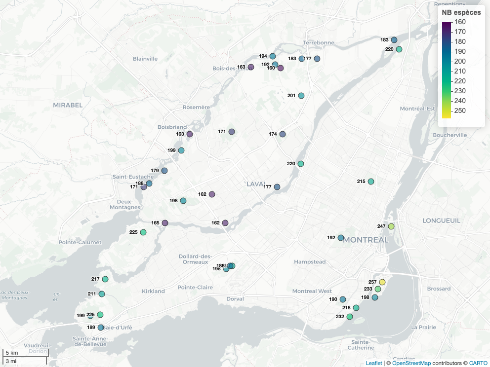
Voilà!
Prochaines étapes
Cette première partie avait pour but de faire un grand tour dans les fonctions utiles pour faire des analyses spatiales. Ainsi, il est possible d’importer et de manipuler les couches spatiales dans R et de préparer des couches pour en faire des cartes. Vous pouvez toujours exporter les couches et continuer dans votre logiciel GIS préféré ensuite
Avec ces nouvelles connaissances, il sera plus facile de manipuler les données de biodiversité provenant de GBIF.
Références
Appelhans, Tim, Florian Detsch, Christoph Reudenbach, et Stefan Woellauer. 2023. mapview: Interactive Viewing of Spatial Data in R. https://github.com/r-spatial/mapview.
Barve, Vijay, et Edmund Hart. 2025. rinat: Access iNaturalist Data Through APIs. https://docs.ropensci.org/rinat/.
Chamberlain, Scott, Damiano Oldoni, et John Waller. 2025. rgbif: Interface to the Global Biodiversity Information Facility API. https://github.com/ropensci/rgbif.
eBird Cornell Lab of Ornithology. 2025. « eBird: Hotspots with Geospatial Coordinates (from API) ». https://support.ebird.org/en/support/solutions/articles/48001009443-ebird-hotspot-faqs.
Gouvernement du Canada. 2025. « Base de Données Toponymiques Du Canada (BDTC) [Jeu de Données] ». https://ressources-naturelles.canada.ca/carte-outils-publications/outils-logiciels/base-donnees-toponymiques-canada.
Ministère des Ressources Naturelles et des Forêts. 2016. « Classification Écologique Du Territoire Québécois, [Jeu de Données], Dans Données Québec ». https://www.donneesquebec.ca/recherche/fr/dataset/systeme-hierarchique-de-classification-ecologique-du-territoire.
———. 2018. « Découpages Administratifs, [Jeu de Données], Dans Données Québec ». https://www.donneesquebec.ca/recherche/dataset/decoupages-administratifs.
———. 2019. « Géobase Du Réseau Hydrographique Du Québec (GRHQ), [Jeu de Données], Dans Données Québec ». https://www.donneesquebec.ca/recherche/dataset/grhq.
Myhrvold, Nathan P., Elita Baldridge, Benjamin Chan, Dhileep Sivam, Daniel L. Freeman, et S. K. Morgan Ernest. 2015. « An Amniote Life-History Database to Perform Comparative Analyses with Birds, Mammals, and Reptiles: Ecological Archives E096-269 ». Ecology 96 (11): 3109‑9. https://doi.org/10.1890/15-0846R.1.
Ouranos. 2024. « Places [Jeu de Données] ». https://portraits.ouranos.ca/fr/.
Pebesma, Edzer. 2018. « Simple Features for R: Standardized Support for Spatial Vector Data ». The R Journal 10 (1): 439‑46. https://doi.org/10.32614/RJ-2018-009.
———. 2025. sf: Simple Features for R. https://r-spatial.github.io/sf/.
Pebesma, Edzer, et Roger Bivand. 2023. Spatial Data Science: With applications in R. Chapman and Hall/CRC. https://doi.org/10.1201/9780429459016.
R Core Team. 2024. R: A Language and Environment for Statistical Computing. Vienna, Austria: R Foundation for Statistical Computing. https://www.R-project.org/.
Robert, Michel, Marie-Hélène Hachey, Denis Lepage, et Andrew R. Couturier. 2019. Deuxième Atlas Des Oiseaux Nicheurs Du Québec Méridional. Montréal: Regroupement QuébecOiseaux.
Statistique Canada. 2025. « Recensement de 2021, Fichier Numérique Des Limites (FNL; Lpr_000a21f_f) ». https://www12.statcan.gc.ca/census-recensement/2021/geo/sip-pis/boundary-limites/index2021-fra.cfm?year=21.
Tobias, Joseph A., Catherine Sheard, Alex L. Pigot, Adam J. M. Devenish, Jingyi Yang, Ferran Sayol, Montague H. C. Neate-Clegg, et al. 2022. « AVONET: Morphological, Ecological and Geographical Data for All Birds ». Édité par Tim Coulson. Ecology Letters 25 (3): 581‑97. https://doi.org/10.1111/ele.13898.
Ville de Laval. 2017. « Pistes Cyclables et Piétonnières, [Jeu de Données], Dans Données Québec ». https://www.donneesquebec.ca/recherche/dataset/pistes-cyclables-et-pietonnieres.
Ville de Montréal. 2013. « Réseau Cyclable, [Jeu de Données], Dans Données Québec ». https://www.donneesquebec.ca/recherche/dataset/vmtl-pistes-cyclables.
Wickham, Hadley. 2016. ggplot2: Elegant Graphics for Data Analysis. Springer-Verlag New York. https://ggplot2-book.org.
Wickham, Hadley, Winston Chang, Lionel Henry, Thomas Lin Pedersen, Kohske Takahashi, Claus Wilke, Kara Woo, Hiroaki Yutani, Dewey Dunnington, et Teun van den Brand. 2024. ggplot2: Create Elegant Data Visualisations Using the Grammar of Graphics. https://ggplot2.tidyverse.org.
Wickham, Hadley, Romain François, Lionel Henry, Kirill Müller, et Davis Vaughan. 2023. dplyr: A Grammar of Data Manipulation. https://dplyr.tidyverse.org.
Notes de bas de page
Un progiciel est un ensemble de fonctions qui servent à accomplir des tâches. Dans R, on les mets en mémoire en éxécutant
library(base)dans la console. Un progiciel s’installe avec la commandeinstall.packages("dplyr").↩︎
Citation
BibTeX
@article{beausoleil2026,
author = {Beausoleil, Marc-Olivier},
title = {Guide d’identification de biodiversité du Québec - Partie 1 :
les cartes},
journal = {Évologie},
date = {2026-01-19},
url = {https://evologie.netlify.app},
doi = {10.59350/qsh3j-3tk49},
langid = {fr}
}
Citation :
Beausoleil, Marc-Olivier. 2026. “Guide d’identification de
biodiversité du Québec - Partie 1 : les cartes.”
Évologie, January. https://doi.org/10.59350/qsh3j-3tk49.